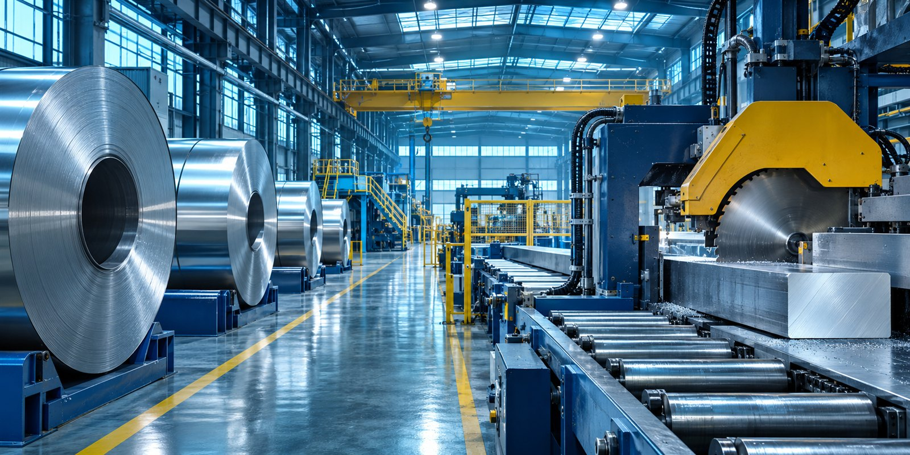
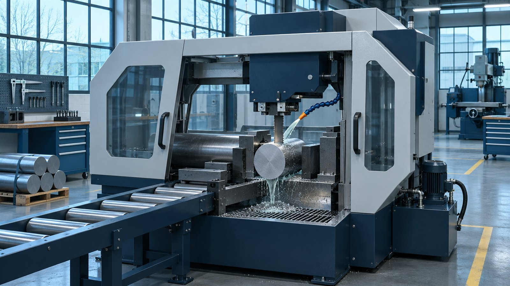
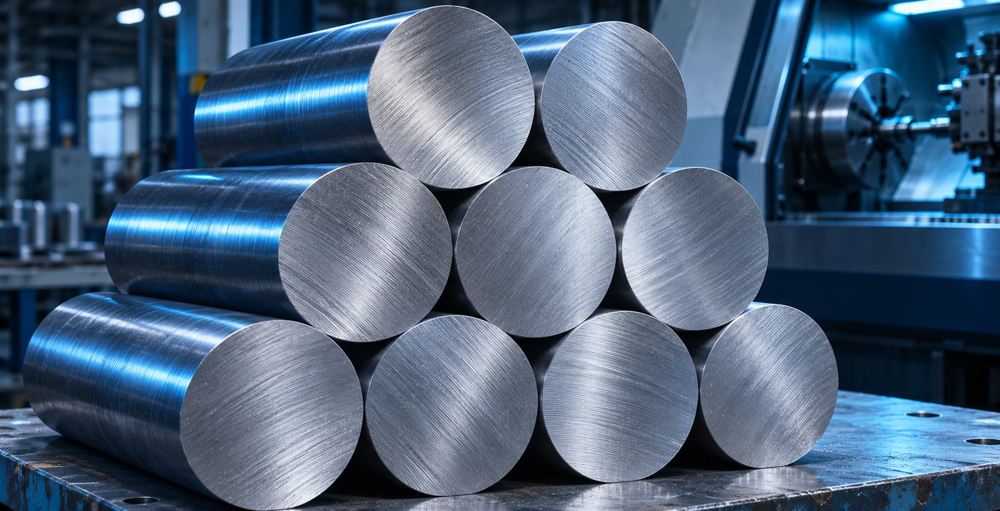

Инвестиционная концепция участка точной резки стального проката для машиностроения.
Механический цех закупает металл, хотя ему нужна заготовка в размер. Резка занимает оборудование и усложняет планирование.

Сверка марки стали, сертификата плавки и геометрии поступившего проката.
Одна спецификация заказчика задаёт длину, припуск и маркировку партии.
Упаковка по заказам производства. Прослеживаемость до исходной плавки.
Пример — концепт для портфолио. Условная модель, не прогноз и не предложение инвестировать.

Письма о намерениях и типовые карты резки.
Пробная партия на оборудовании поставщика.
Мощность сети, логистика и план размещения.
Сценарии загрузки и условия участия инвестора.
Обсудить объём участия, доступную площадку и требования к доходности. До встречи собрать спецификации потенциальных заказчиков и предложения поставщиков оборудования.